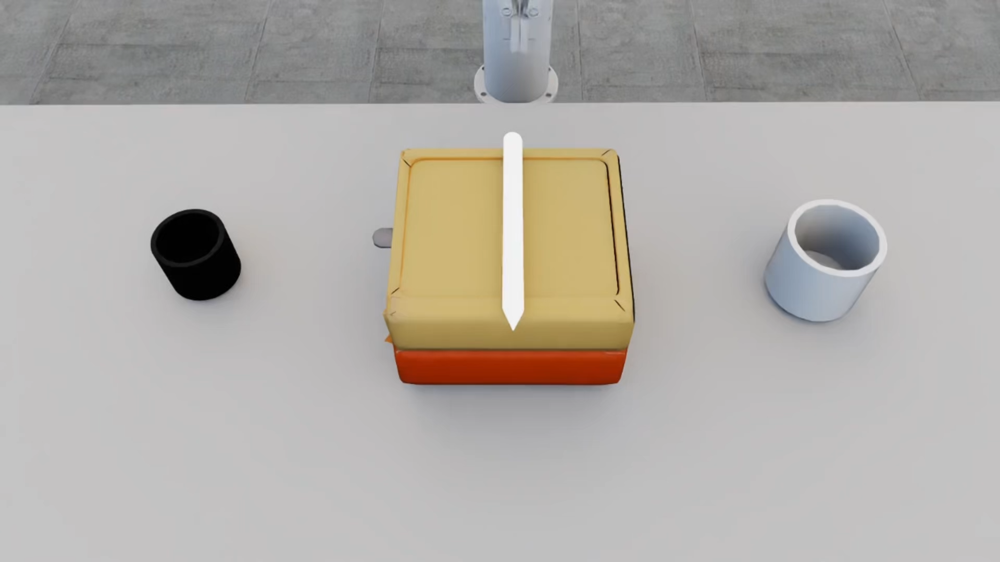
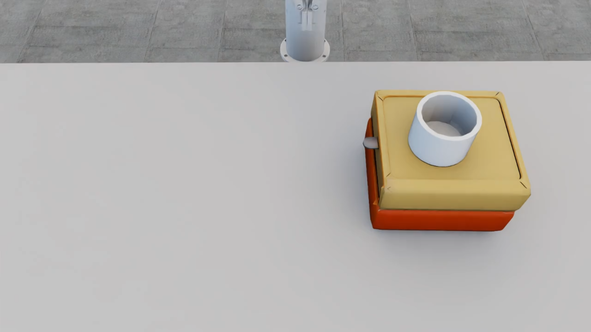
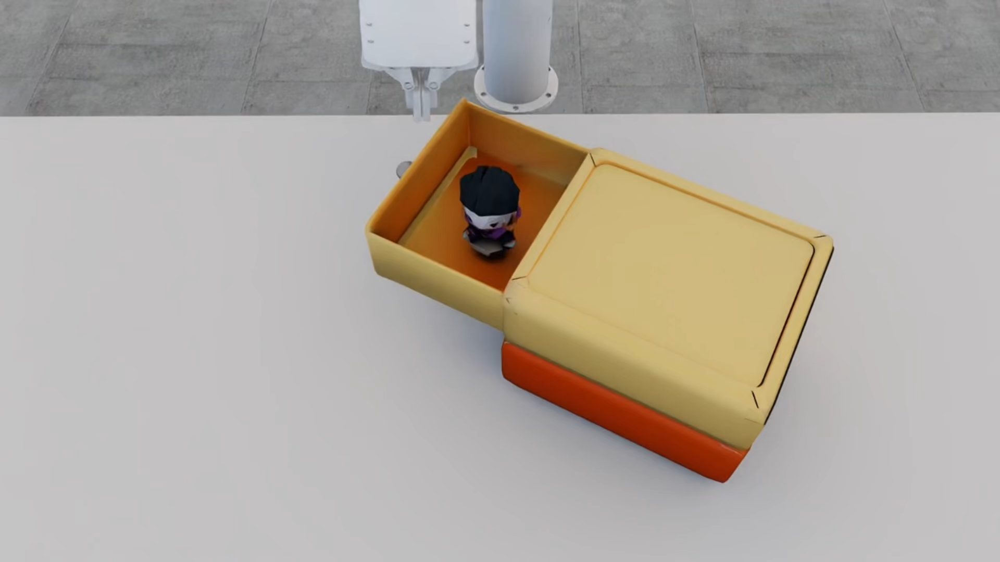
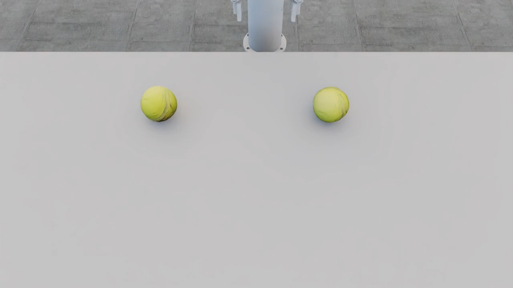
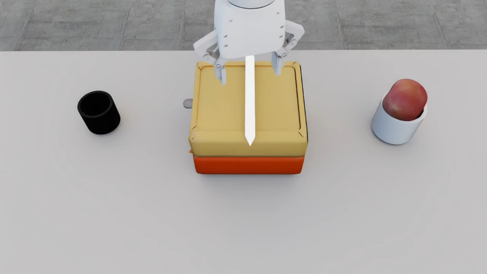
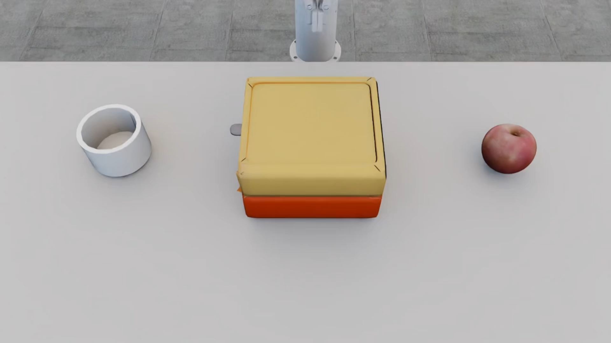
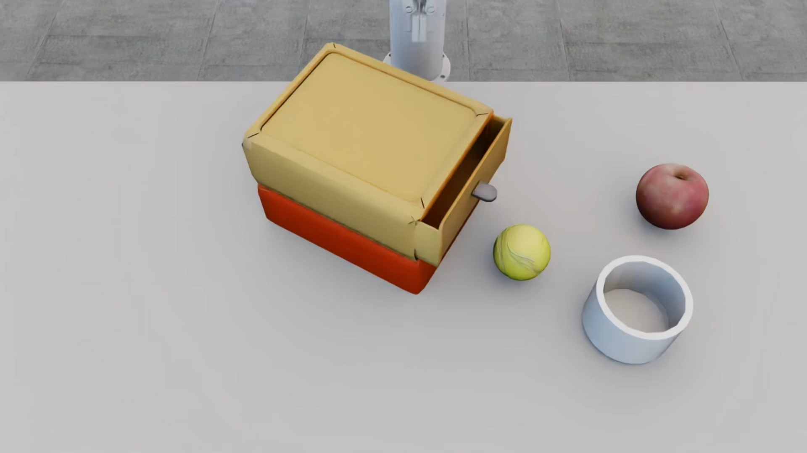

World models have emerged as a pivotal component in robot manipulation planning, enabling agents to predict future
environmental states and reason about the consequences of actions before execution. While video-generation models
are increasingly adopted, they often lack rigorous physical grounding, leading to hallucinations and a failure to
maintain consistency in long-horizon physical constraints. To address these limitations, we propose Embodied
Tree of Thoughts (EToT), a novel Real2Sim2Real planning framework that leverages a physics-based interactive
digital twin as an embodied world model. EToT formulates manipulation planning as a tree search expanded through
two synergistic mechanisms: (1) Priori Branching, which generates diverse candidate execution paths based on
semantic and spatial analysis ; and (2) Reflective Branching which utilizes VLMs to diagnose execution failures
within the simulator and iteratively refine the planning tree with corrective actions. By grounding high-level
reasoning in a physics simulator, our framework ensures that generated plans adhere to rigid-body dynamics and
collision constraints. We validate EToT on a suite of short- and long-horizon manipulation tasks, where it
consistently outperforms baselines by effectively predicting physical dynamics and adapting to potential
failures.
Given a task instruction, the system first reconstructs the real scene into an interactive 3D digital twin. It
then constructs a world-model-grounded planning tree through Priori Branching and Reflective
Branching. Priori Branching proposes initial candidate branches, while Reflective Branching analyzes
simulated execution failures to expand the tree with revised branches. Through iterative searching and expansion
of the planning tree, the system identifies a feasible plan, which is finally executed on the real robot in a
closed-loop manner with visual feedback and re-planning.
Task 1
Next action
Simulator view
Camera view
Third-person view
Open the door of the microwave oven
Initial State
Open the door
New Branch
Pick up the tennis
Put on the desk
Open the door
Task 2
Next action
Simulator view
Camera view
Third-person view
Reorient the pen and drop it into a pen holder.
Initial State

Pick up the pen
Put into holder 1
Put into holder 2
Task 3
Next action
Simulator view
Camera view
Third-person view
Pick up the holder horizontally or vertically.
Initial State

Pick up holder (horizontally)
Pick up holder (vertically)
Task 4
Next action
Simulator view
Camera view
Third-person view
Close the drawer.
Initial State

Close the drawer
New Branch
Pick up the toy
Put on the drawer
Close the drawer
Disturbance
Next action
Simulator view
Camera view
Third-person view
Pick up a tennis ball.
Initial State

Pick up the tennis 1
Pick up the tennis 2
Disturbance
Pick up the tennis 1
Pick up the tennis 2
Task 5
Next action
Simulator
Camera
3rd Person
Reorient the pen and drop it into a pen holder.
Initial State (0)

Pick up the pen
Put into holder 1
Put into holder 2
New Branch
Pick up the apple
Put on the desk
Pick up the pen
Put into holder 2
Task 6
Next action
Simulator
Camera
3rd Person
Put the apple and pen holder on the drawer, apple in the holder.
Initial State (0)

Pick up the apple
Put in the holder (2)
Pick up the holder (3)
New Branch
Pick up the holder (4)
Put on the drawer (5)
Pick up the apple (6)
Put into holder (7)
Task 7
Next action
Simulator
Camera
3rd Person
Put the apple and tennis ball in drawer or holder.
Initial State (0)

Pick apple (1)
Put in holder (3)
Pick tennis (5)
Put into holder 1 (8)
Open drawer (6)
Pick tennis (9)
New Branch
Put on drawer (11)
Open drawer (12)
Pick tennis (13)
Put in drawer (14)
Close drawer (15)
Open drawer (2)
Pick apple (4)
Put in drawer (7)
Close drawer (10)
Citation
@misc{xu2025embodiedtreethoughtsdeliberate,
title={Embodied Tree of Thoughts: Deliberate Manipulation Planning with Embodied World Model},
author={Wenjiang Xu and Cindy Wang and Rui Fang and Mingkang Zhang and Lusong Li and Jing Xu and Jiayuan Gu and Zecui Zeng and Rui Chen},
year={2025},
eprint={2512.08188},
archivePrefix={arXiv},
primaryClass={cs.RO},
url={https://arxiv.org/abs/2512.08188},
}